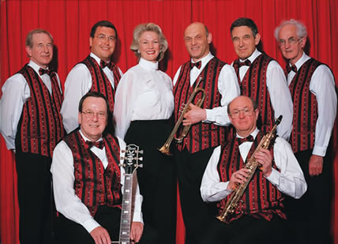

The band operates in London and all around the Home Counties. It's versatile and entertaining, playing music mainly from the Swing era together with Dixieland jazz and Ragtime.
No loud pop to be heard and you won't hear any disco sounds, just very pleasurable jazzy music.
It's great for dancing, also for dinner music and very entertaining.
From Charleston tunes of the 20's and all the Dixieland favourites of the 30's, to our main repertoire of 'Glenn Miller style' swing music from the 40's and romantic ballads and popular jazz classics of the 50's & 60's.
Mike leads on trumpet, together with 6 top class musicians and a fabulous vocalist.